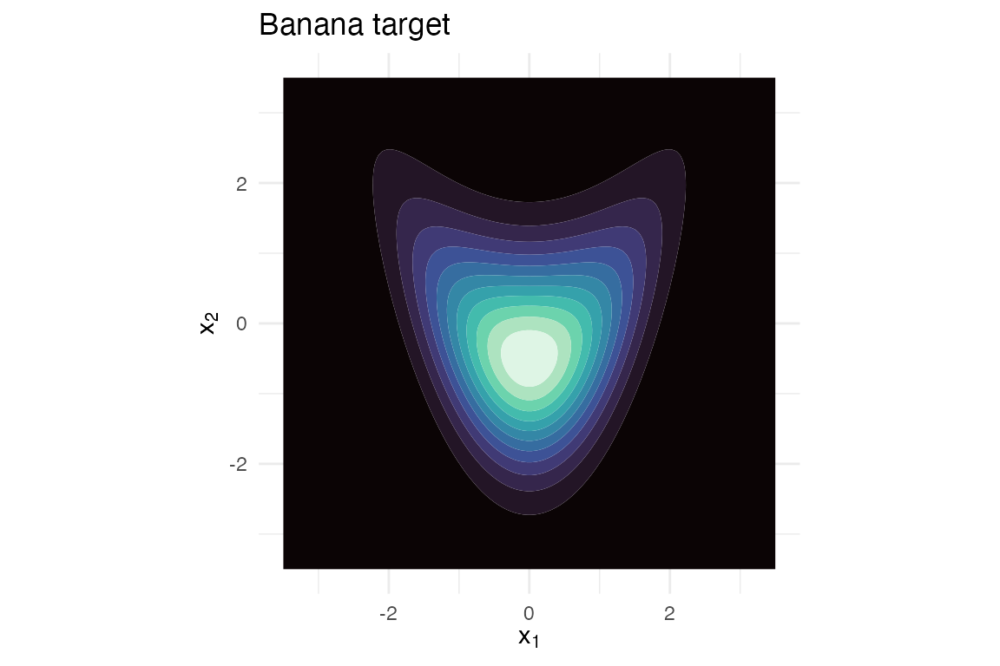
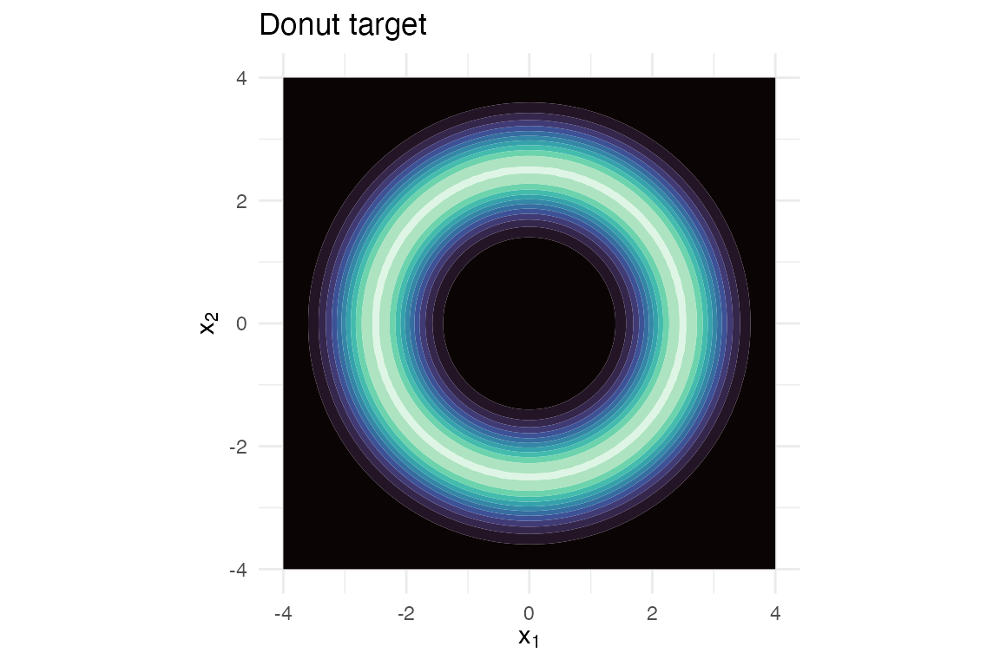
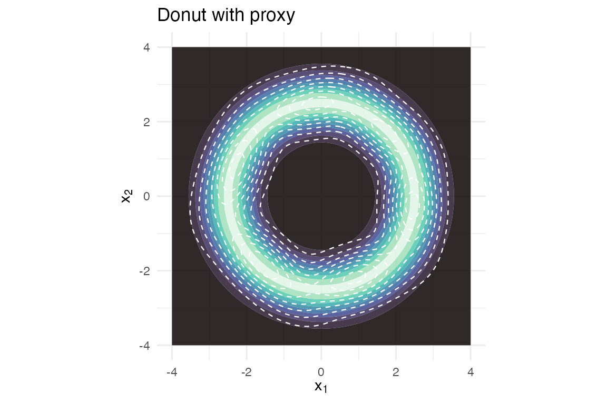
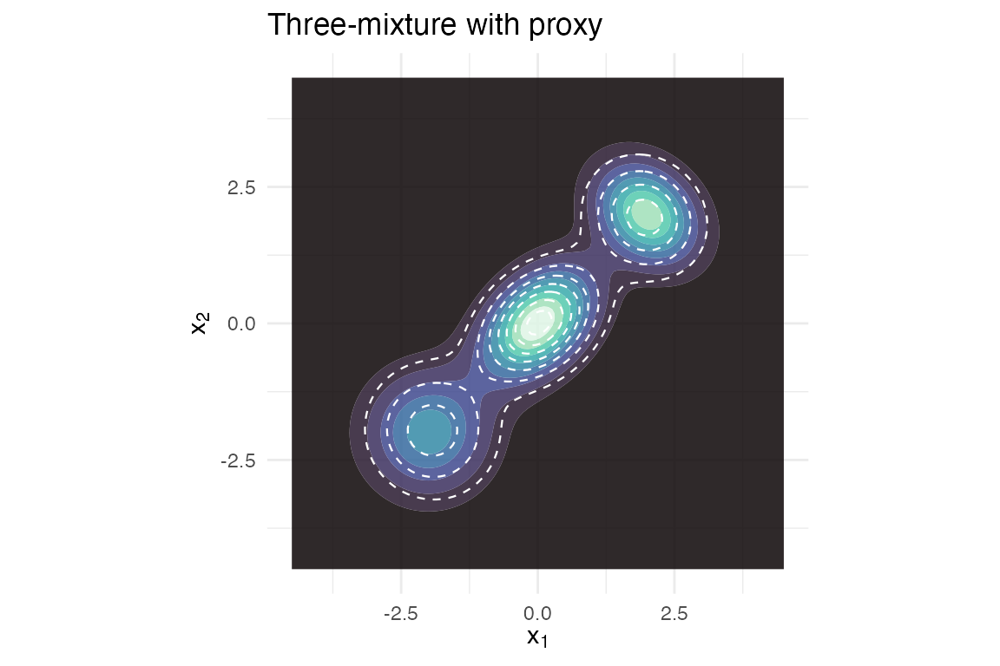
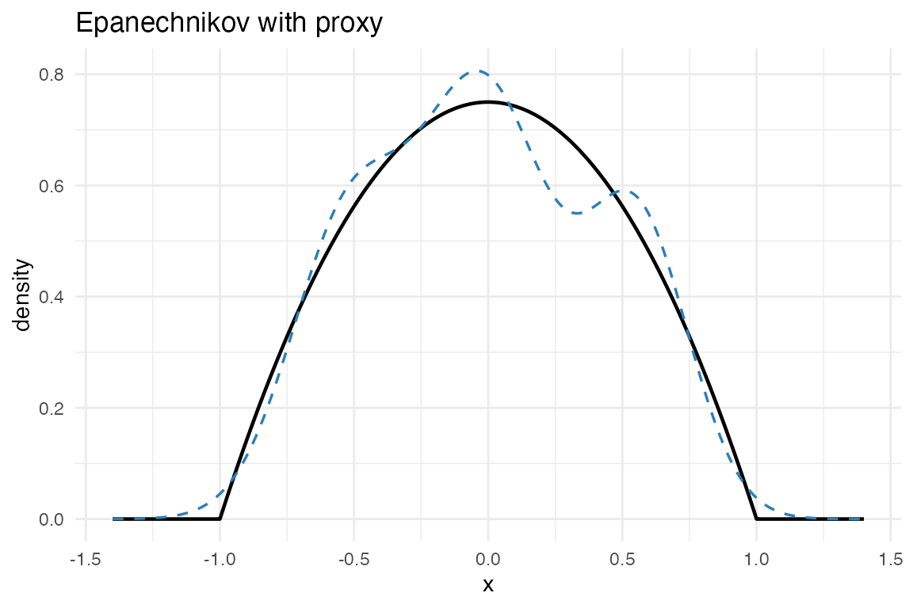

This vignette demonstrates regime (iii) across target shapes. The
KLD-EM regime fits a Gaussian-mixture proxy to a target whose density we
can evaluate but cannot easily sample from. Existing
CRAN packages for Gaussian mixtures – mclust,
mixtools, flexmix – all assume i.i.d. samples
are available.
We exercise three quite different non-Gaussian target shapes:
- the banana – a Rosenbrock-style 2-D bent ridge;
- the donut – a rotationally symmetric annulus;
- the three-mixture – well-separated 2-D Gaussian components.
For each, we
- plot the target;
- fit by
fit_proxymix(regime = "kld")with adf = 5multivariate-t proposal; - report the importance-sample effective size, the final IS-estimated KLD, and a Monte-Carlo Hellinger sanity check;
- overlay the proxy on the target.
Banana
banana <- banana_target()
grid_x <- seq(-3.5, 3.5, length.out = 120)
G_b <- expand.grid(x1 = grid_x, x2 = grid_x)
G_b$f <- exp(banana@log_density(as.matrix(G_b)))
if (requireNamespace("ggplot2", quietly = TRUE)) {
library(ggplot2)
ggplot(G_b, aes(x1, x2, z = f)) +
geom_contour_filled(bins = 12L) +
scale_fill_viridis_d(option = "mako", guide = "none") +
coord_equal() +
labs(title = "Banana target",
x = expression(x[1]), y = expression(x[2])) +
theme_minimal(base_size = 11)
}
Banana target.
fit_b <- fit_proxymix(banana, N = 4L, regime = "kld",
proposal = is_mvt(n_dim = 2L,
sigma = 4 * diag(2),
df = 5),
is_size = 3000L,
max_iter = 50L,
seed = 1L)
fit_b
#> <gmm_fit>: regime = "kld", K = 4, p = 2
#> target : banana
#> iterations : 46
#> converged : TRUE
#> [1] w = 0.4330, |mu| = 0.1166, tr(Sigma) = 1.2545
#> [2] w = 0.2123, |mu| = 0.9733, tr(Sigma) = 0.9433
#> [3] w = 0.1929, |mu| = 1.1925, tr(Sigma) = 2.8870
#> [4] w = 0.1618, |mu| = 1.2661, tr(Sigma) = 2.5167
G_b$g <- exp(dgmm(as.matrix(G_b[, c("x1", "x2")]), fit_b, log = TRUE))
if (requireNamespace("ggplot2", quietly = TRUE)) {
ggplot(G_b, aes(x1, x2)) +
geom_contour_filled(aes(z = f), bins = 10L, alpha = 0.85) +
geom_contour(aes(z = g), colour = "white", linetype = "dashed",
linewidth = 0.4, bins = 8L) +
scale_fill_viridis_d(option = "mako", guide = "none") +
coord_equal() +
labs(title = "Banana with proxy",
x = expression(x[1]), y = expression(x[2])) +
theme_minimal(base_size = 11)
}Banana target (filled) with 4-component proxy (dashed).
Donut
donut <- donut_target()
grid_x <- seq(-4, 4, length.out = 120)
G_d <- expand.grid(x1 = grid_x, x2 = grid_x)
G_d$f <- exp(donut@log_density(as.matrix(G_d)))
if (requireNamespace("ggplot2", quietly = TRUE)) {
ggplot(G_d, aes(x1, x2, z = f)) +
geom_contour_filled(bins = 12L) +
scale_fill_viridis_d(option = "mako", guide = "none") +
coord_equal() +
labs(title = "Donut target",
x = expression(x[1]), y = expression(x[2])) +
theme_minimal(base_size = 11)
}
Donut target (rotationally symmetric annulus).
A donut is genuinely hard for a Gaussian mixture – the modes are
infinitely many (along the ring). With N = 6
components, KLD-EM finds a balanced ring-approximation:
fit_d <- fit_proxymix(donut, N = 6L, regime = "kld",
proposal = is_mvt(n_dim = 2L,
sigma = 9 * diag(2),
df = 5),
is_size = 3500L,
max_iter = 60L,
seed = 1L)
fit_d
#> <gmm_fit>: regime = "kld", K = 6, p = 2
#> target : donut
#> iterations : 38
#> converged : TRUE
#> [1] w = 0.1857, |mu| = 2.4064, tr(Sigma) = 1.2368
#> [2] w = 0.1843, |mu| = 2.4028, tr(Sigma) = 1.1954
#> [3] w = 0.1704, |mu| = 2.3580, tr(Sigma) = 1.1155
#> [4] w = 0.1619, |mu| = 2.4566, tr(Sigma) = 0.9912
#> [5] w = 0.1575, |mu| = 2.4804, tr(Sigma) = 1.0185
#> ... 1 more components
G_d$g <- exp(dgmm(as.matrix(G_d[, c("x1", "x2")]), fit_d, log = TRUE))
if (requireNamespace("ggplot2", quietly = TRUE)) {
ggplot(G_d, aes(x1, x2)) +
geom_contour_filled(aes(z = f), bins = 10L, alpha = 0.85) +
geom_contour(aes(z = g), colour = "white", linetype = "dashed",
linewidth = 0.4, bins = 8L) +
scale_fill_viridis_d(option = "mako", guide = "none") +
coord_equal() +
labs(title = "Donut with proxy",
x = expression(x[1]), y = expression(x[2])) +
theme_minimal(base_size = 11)
}
Donut target (filled) with 6-component proxy (dashed).
Three-mixture
mt <- mixture_target()
grid_x <- seq(-4.5, 4.5, length.out = 120)
G_m <- expand.grid(x1 = grid_x, x2 = grid_x)
G_m$f <- exp(mt@log_density(as.matrix(G_m)))
if (requireNamespace("ggplot2", quietly = TRUE)) {
ggplot(G_m, aes(x1, x2, z = f)) +
geom_contour_filled(bins = 12L) +
scale_fill_viridis_d(option = "mako", guide = "none") +
coord_equal() +
labs(title = "Three-mixture target",
x = expression(x[1]), y = expression(x[2])) +
theme_minimal(base_size = 11)
}Three-component mixture target.
fit_m <- fit_proxymix(mt, N = 3L, regime = "kld",
proposal = is_mvt(n_dim = 2L,
sigma = 6 * diag(2),
df = 5),
is_size = 3000L,
max_iter = 50L,
seed = 1L)
fit_m
#> <gmm_fit>: regime = "kld", K = 3, p = 2
#> target : three_mixture
#> iterations : 10
#> converged : TRUE
#> [1] w = 0.4164, |mu| = 0.0300, tr(Sigma) = 0.8377
#> [2] w = 0.3069, |mu| = 2.7545, tr(Sigma) = 1.2249
#> [3] w = 0.2767, |mu| = 2.7562, tr(Sigma) = 0.8740
G_m$g <- exp(dgmm(as.matrix(G_m[, c("x1", "x2")]), fit_m, log = TRUE))
if (requireNamespace("ggplot2", quietly = TRUE)) {
ggplot(G_m, aes(x1, x2)) +
geom_contour_filled(aes(z = f), bins = 10L, alpha = 0.85) +
geom_contour(aes(z = g), colour = "white", linetype = "dashed",
linewidth = 0.4, bins = 8L) +
scale_fill_viridis_d(option = "mako", guide = "none") +
coord_equal() +
labs(title = "Three-mixture with proxy",
x = expression(x[1]), y = expression(x[2])) +
theme_minimal(base_size = 11)
}
Three-mixture target (filled) with 3-component proxy (dashed).
Bounded support
The three targets above all live on the whole plane. Some targets are instead compactly supported – exactly zero outside a bounded region. The textbook example is the Epanechnikov density on . No mixture of full-support Gaussians can be exactly zero on an interval, so regime (iii) is the only viable route – and the default -proposal is actively unsafe here, since it places importance draws where the target log-density is , producing non-finite weights.
proxymix handles this safely. A target can declare its
support, and fit_kld_em() then selects a
support-matched is_uniform() proposal
automatically instead of the crashing default.
epanechnikov_target() is a built-in compact-support fixture
that declares its support:
epan <- epanechnikov_target(n_dim = 1L)
epan
#> <gmm_target>: "epanechnikov" in p = 1 dimensions
#> log_density : supplied
#> samples : <absent>
#> normalised : TRUE
#> log Z(f) : 0
#> support : [-1, 1]Fitting needs no hand-chosen proposal – the declared support drives the choice, announced in a one-line message:
fit_e <- fit_proxymix(epan, N = 3L, regime = "kld",
is_size = 4000L, max_iter = 60L, seed = 1L)
#> Auto-selected a support-matched proposal ("is_uniform[support-matched]") for
#> the declared target support.
#> ℹ Pass an explicit `proposal` to override.
fit_e@diagnostics$proposal_name
#> [1] "is_uniform[support-matched]"
c(ess = round(fit_e@diagnostics$ess, 1L),
support_fraction = fit_e@diagnostics$support_fraction,
kld_final = round(fit_e@diagnostics$kld_final, 4L))
#> ess support_fraction kld_final
#> 3298.5000 1.0000 0.0092Every importance draw receives a finite weight (the support fraction is 1), and the three-component proxy tracks the inverted-parabola shape closely:
xs <- seq(-1.4, 1.4, length.out = 400L)
df_e <- data.frame(
x = xs,
f = exp(epan@log_density(matrix(xs, ncol = 1L))),
g = exp(dgmm(matrix(xs, ncol = 1L), fit_e, log = TRUE))
)
if (requireNamespace("ggplot2", quietly = TRUE)) {
ggplot(df_e, aes(x)) +
geom_line(aes(y = f), linewidth = 0.8) +
geom_line(aes(y = g), linetype = "dashed", linewidth = 0.6,
colour = "#2c7fb8") +
labs(title = "Epanechnikov with proxy", y = "density") +
theme_minimal(base_size = 11)
}
Epanechnikov target (solid) with 3-component proxy (dashed).
Summary
summary_tbl <- data.frame(
target = c("banana", "donut", "three-mixture"),
N = c(gmm_n_components(fit_b),
gmm_n_components(fit_d),
gmm_n_components(fit_m)),
is_size = c(fit_b@diagnostics$is_size,
fit_d@diagnostics$is_size,
fit_m@diagnostics$is_size),
ESS = round(c(fit_b@diagnostics$ess,
fit_d@diagnostics$ess,
fit_m@diagnostics$ess), 1L),
kld_final = round(c(fit_b@diagnostics$kld_final,
fit_d@diagnostics$kld_final,
fit_m@diagnostics$kld_final), 4L),
hellinger2 = round(c(
hellinger_mc(fit_b, n_mc = 2000L, seed = 1L)$h2,
hellinger_mc(fit_d, n_mc = 2000L, seed = 1L)$h2,
hellinger_mc(fit_m, n_mc = 2000L, seed = 1L)$h2
), 4L)
)
summary_tbl
#> target N is_size ESS kld_final hellinger2
#> 1 banana 4 3000 1234.4 0.0060 0.0008
#> 2 donut 6 3500 1034.7 -0.0044 -0.0067
#> 3 three-mixture 3 3000 757.7 -0.0082 -0.0064Interpretation:
-
ESS– the effective sample size of the importance-sampling weights, out ofis_size. ESS well belowis_sizemeans the proposal is wasteful (heavy weight on few draws); ESS nearis_sizemeans the proposal is close to the target. -
kld_final– the importance-sampled estimate of at the final parameters. Small is good. -
hellinger2– a Monte-Carlo estimate of the squared Hellinger distance . Bounded in when both densities are normalised; a small value confirms the proxy reproduces the target’s mass and shape.
The three-mixture is fit nearly exactly (the proxy lives in the same parametric family as the target). The banana is well-approximated by four Gaussians along the ridge. The donut – a topology a Gaussian mixture cannot reproduce exactly – is approximated by a ring of 6 components, with a non-trivial residual KLD reflecting the structural mismatch.
Reference
Hoek, J. van der and Elliott, R. J. (2024). Mixtures of multivariate Gaussians. Stochastic Analysis and Applications. https://doi.org/10.1080/07362994.2024.2372605.